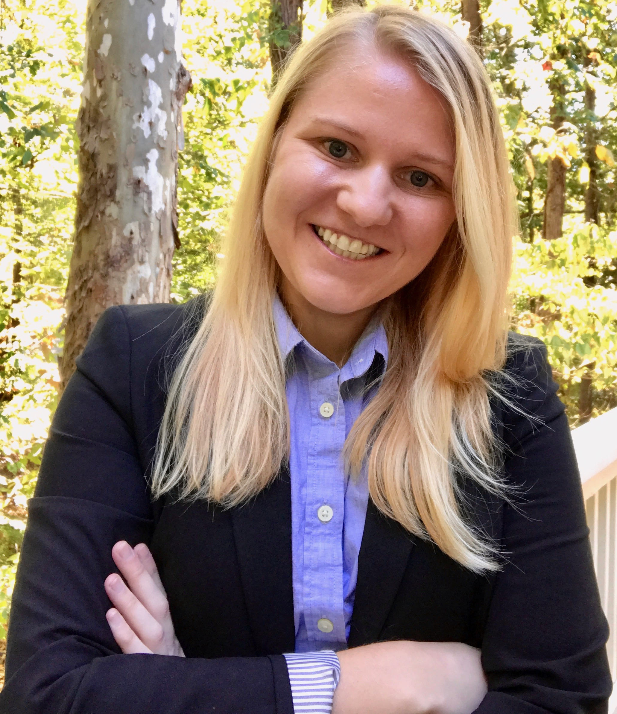
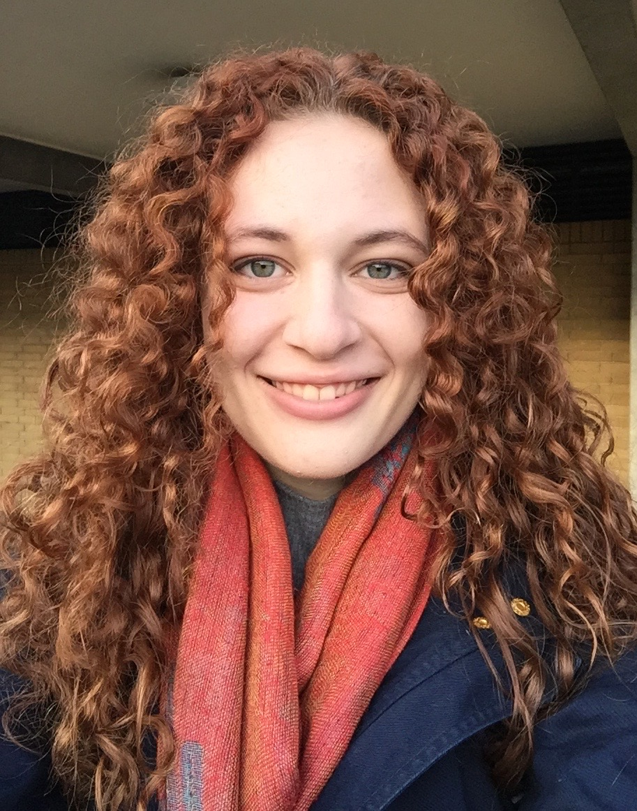
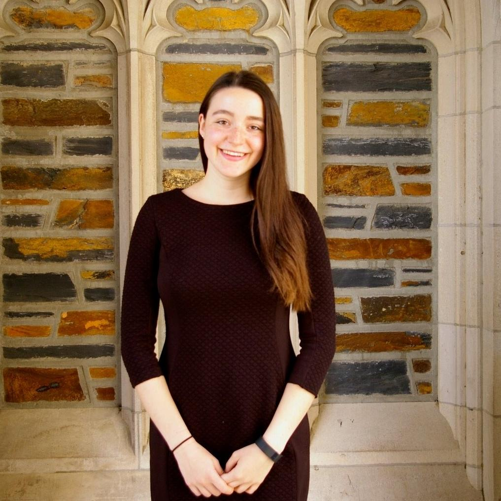

Vincent Conitzer is a Kimberly J. Jenkins University Professor of New Technologies and Professor of Computer Science, Professor of Economics, and Professor of Philosophy at Duke University. He received the IJCAI Computers and Thought Award, the main AI award for a researcher under 35, as well as a Presidential Early Career Award for Scientists and Engineers.
John Dickerson is an Assistant Professor of Computer Science at the University of Maryland. He develops practical approaches to solving economic problems using techniques from stochastic optimization and machine learning. He is an NSF CAREER recipient, Facebook Fellow, and Siebel Scholar.
Joshua August Skorburg is Postdoctoral Associate in Philosophy. His research is in moral psychology and applied ethics. He is teaching an ethics course for Duke's new Master in Interdisciplinary Data Science program.
Abbas Zaidi is finishing his PhD at the Department of Statistical Science at Duke University. His research is focused on the development of Bayesian methods for causal inference. He is currently working on understanding causal relationships in economic trust game data using advanced machine learning techniques.
Joy Becker is an alum of Grinnell College with a B.A. in Biology. As part of a long meandering journey towards finding a career path, she happens to find herself collecting data for the Trust Game. Her current interests include neuroscience, bioinformatics, and pestering her two cats.
Emre Kiziltug is an undergraduate senior at Duke majoring in Computer Science and Economics and minoring in Biology. He is interested in ML applications in medicine an involved with the kidney exchange project.
Cassi Carley is in law school to pursue a career in tech law and policy, following her Ph.D. in Computer Science from Duke. Currently, she is exploring ethical tech as a fellow at the Duke Center on Law & Technology and through participation in the Bass Connections Moral AI and Adaptive Regulations groups. Her thesis work is in computer vision and AI, exploring the classification of activities that involve patterns of hand motion and manipulation. Cassi graduated from Duke in 2011 with a B.S. in Public Policy and Computer Science.
Yuan Deng is currently a fourth-year Ph.D. student in Computer Science at Duke University, advised by Vincent Conitzer. He is broadly interested in theoretical computer science, especially algorithmic game theory and machine learning.
alumnus
Rachel Freedman graduated from Duke University in 2017 with an interdepartmental undergraduate degree in "Artificial Intelligence Systems". She’s interested in effective altruism and AI safety, and co-founded an existential risk student society during her year abroad at Oxford. She completed her undergraduate thesis on kidney exchanges with the Moral AI group, supervised by Dr. Vince Conitzer, and looks forward to pursuing further research in artificial intelligence.
alumnus
Max Kramer is currently a Ph. D. student in philosophy at the University of Arizona. He led a project on folk appraisal of AI systems making moral and consequential decisions in a variety of contexts. He found that their preferences were largely a function of prior exposure to computerized systems making these kinds of decisions and in light of this finding, we developed a series of interventions that were aimed at encouraging the folk to have a greater preference for AI decision-makers in a kidney exchange context in order to both better characterize what was at work in forming these preferences and also to attempt to synthesize these preference-guiding facts, beliefs, or dispositions.
alumna
Sarah Cogan is a junior from New York majoring in Computer Science and minoring in Philosophy. As a co-president of Duke's effective altruism chapter "EA: Duke," Sarah grew interested in artificial intelligence after learning about AI safety concerns prevalent in the effective altruism community. Sarah is eager to work with this Bass Connections team to combine her two interests in computer science and ethics.

alumnus